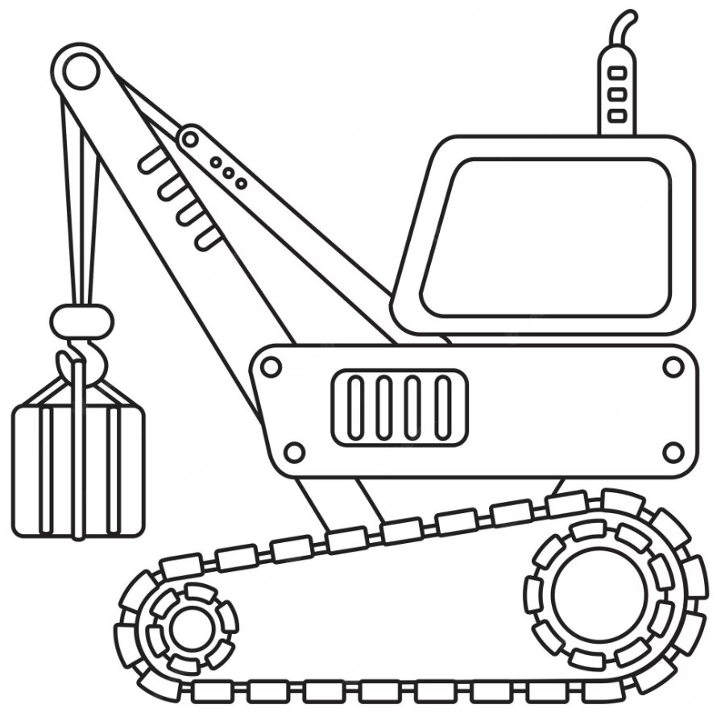

Usefulness of crains
One of the most common uses for cranes is in construction. Cranes are used to lift heavy materials, such as steel beams and concrete slabs, into place. This allows for the construction of tall buildings, bridges, and other large structures. Cranes are also used to load and unload ships and airplanes.
In addition to their use in construction, cranes are also used in a variety of other industries. For example, cranes are used in the oil and gas industry to drill wells and to build pipelines. Cranes are also used in the mining industry to extract minerals from the ground. And cranes are used in the agricultural industry to harvest crops and to load and unload livestock.
Cranes are also a source of beauty and wonder. They are graceful creatures that are a joy to watch.
Cranes are also a vital tool for disaster relief. They can be used to lift heavy debris, to rescue people from collapsed buildings, and to deliver supplies to people in need. In the aftermath of a natural disaster, cranes can be the difference between life and death.
There are many different types of cranes, each designed for a specific purpose. Cranes are a vital part of our modern world, and they will continue to be used for many years to come.